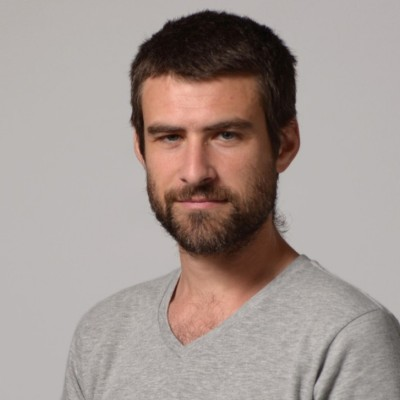

Fernando Momo
Licenciado y Doctor en Ciencias Biológicas por la Universidad de Buenos Aires, especializado en Ecología Matemática y Ecología Teórica, ha publicado más de 80 trabajos científicas y libros sobre ecología y sistemas complejos. Presidió la Asociación Argentina de Ecología y la Sociedad Latinoamericana de Biomatemática. Actualmente es Profesor Emérito de la Universidad Nacional de Luján.

Gustavo Landfried
Licenciado en Antropología Social y Doctor en Ciencias de la Computación por la Universidad de Buenos Aires, Gustavo es actualmente investigador y docente en el Departamento de Computación. Su trabajo se enfoca en la aplicación de los métodos bayesianos en campos como la salud, los deportes y la educación. Cofundador de Bayes Plurinacional.